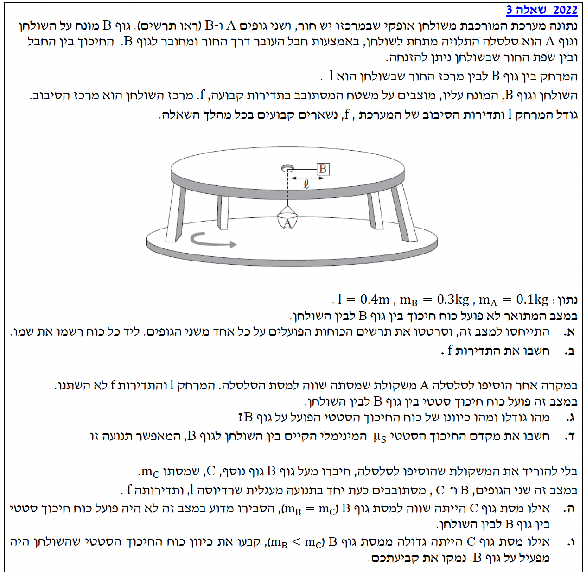
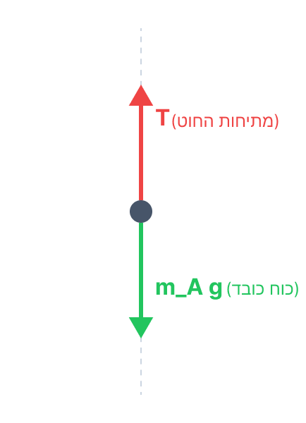
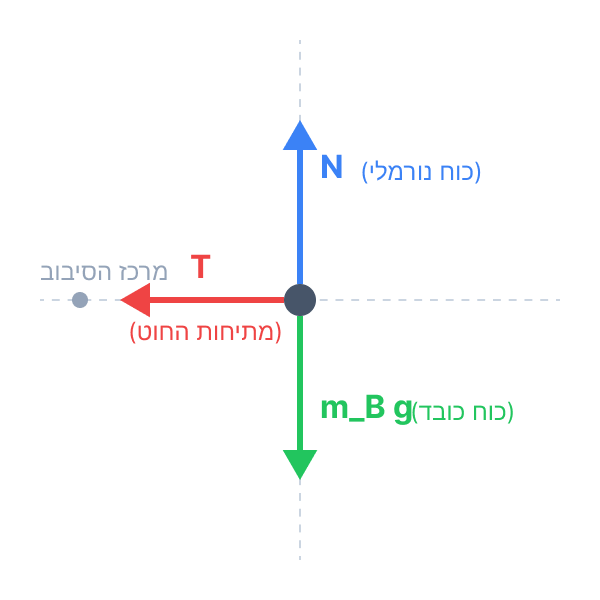
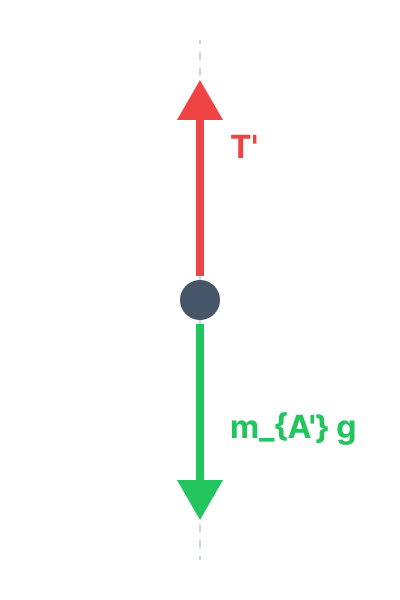
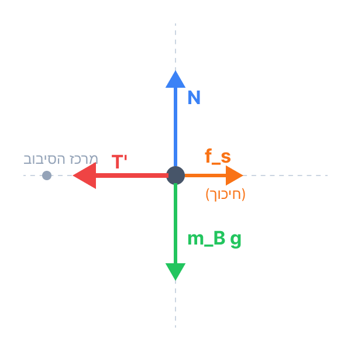
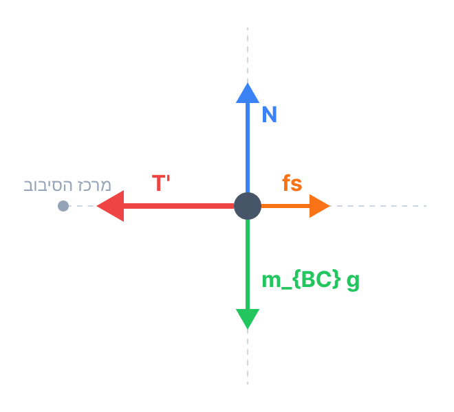

פתרון בגרות בפיזיקה 2022
מכניקה (5 יח"ל) - שאלה 3
פתרון מודרך, צעד-אחר-צעד, הכולל ניתוח כוחות ודינמיקה של תנועה מעגלית.
עודכן:
--- --:--:--
מבט כללי על השאלה
שלום תלמידים! בשאלה זו אנו חוקרים מערכת המשלבת תנועה מעגלית של גוף על שולחן מסתובב, יחד עם גוף תלוי היוצר את המתיחות בחוט.
ננתח את הכוחות, נשתמש בחוקי ניוטון ונקשר את הדינמיקה לתנועה מעגלית קצובה. נפתור שלב אחר שלב באופן מסודר ונקפיד על פיתוח הדרגתי.

[תמונת השאלה המקורית]
לא נמצאה תמונה בשם question-image.png באותה תיקייה.
מה נתון:
- מסת הסלסלה A: \( m_A = 0.1 \text{ kg} \).
- מסת הגוף B: \( m_B = 0.3 \text{ kg} \).
- מרחק גוף B ממרכז הסיבוב: \( l = 0.4 \text{ m} \).
- במצב זה לא פועל כוח חיכוך על גוף B (\( f_s = 0 \)).
- תאוצת הכובד: \( g = 10 \text{ m/s}^2 \) (מוגדרת חיובית מטה עבור A).
- היחידות כבר ב-MKS, אין צורך בהמרה.
מה מחפשים:
לסרטט תרשים כוחות (FBD) הפועלים על כל אחד מהגופים ולרשום את שם הכוח ליד כל וקטור.
נוסחאות ועקרונות בשימוש:
\( \Sigma \vec{F} = m\vec{a} \)
תרשימי כוחות:
כל גוף מקיים אינטראקציה עם כדור הארץ (כוח כובד), עם החוט (מתיחות), וגוף B גם עם המשטח (כוח נורמלי). להלן תרשימי הכוחות עבור שני הגופים. מרכז המעגל של השולחן מוגדר לצורך השרטוט בצד שמאל של גוף B, בהתאם לאיור בשאלה.
גוף A (הסלסלה)

גוף B (על השולחן)

💡 טיפ מורה:
שימו לב! מאחר והחוט חסר מסה והחור חלק (אין חיכוך במעבר דרך החור), המתיחות \( T \) שווה בגודלה לאורך כל החוט. עבור גוף A היא פועלת מעלה, ועבור גוף B היא פועלת פנימה אל מרכז המעגל – והיא זו שמספקת את הכוח הצנטריפטלי הדרוש לתנועה המעגלית במצב זה.
מה נתון:
- נתוני סעיף א'. גוף A במנוחה בציר האנכי (\( a=0 \)).
- גוף B נע בתנועה מעגלית קצובה ברדיוס \( R = l = 0.4 \text{ m} \).
מה מחפשים:
את תדירות הסיבוב של המערכת, \( f \) [Hz].
נוסחאות ועקרונות בשימוש:
\( \Sigma \vec{F} = m\vec{a} \)
\( W = mg \)
\( a_R = \omega^2 R \)
\( \omega = 2\pi f \)
פתרון צעד-אחר-צעד:
שלב 1: משוואת כוחות לגוף A
עבור גוף A בציר האנכי (במצב מנוחה):
\[ \Sigma F_y = T - m_A g = m_A \cdot 0 \]
\[ T = m_A g = 0.1 \cdot 10 = 1 \text{ N} \]
שלב 2: משוואת כוחות לגוף B
עבור גוף B בציר הרדיאלי (תנועה מעגלית). הכוח היחיד הפועל פנימה הוא המתיחות \( T \):
\[ \Sigma F_R = T = m_B a_R \]
שלב 3: הצבה וחישוב התדירות
נציב את נוסחת התאוצה הרדיאלית כתלות בתדירות (\( a_R = \omega^2 l = 4\pi^2 f^2 l \)):
\[ T = m_B \cdot 4\pi^2 f^2 l \]
\[ 1 = 0.3 \cdot 4\pi^2 \cdot f^2 \cdot 0.4 \]
\[ 1 = 0.48 \pi^2 f^2 \]
\[ f^2 = \frac{1}{0.48 \pi^2} \]
\[ f = \sqrt{\frac{1}{0.48 \pi^2}} = \frac{1}{\pi\sqrt{0.48}} \approx 0.45944... \text{ Hz} \]
מסקנה: \( f = 0.459 \text{ Hz} \)
💡 טיפ מורה:
כדאי לשים לב לתפקיד המיוחד של החוט במערכת הזו. המתיחות בחוט משמשת כמעין 'שליח' שמקשר בין שני הגופים: מצד אחד היא מחזיקה את הסלסלה התלויה באוויר (שיווי משקל אנכי), ומצד שני היא מנתבת את אותו כוח בדיוק כדי למשוך את הגוף שעל השולחן פנימה ולאפשר את התנועה המעגלית. הסתכלות על החוט כגורם המקשר עוזרת מאוד לראות את התמונה הפיזיקלית השלמה.
מה נתון:
- הוסיפו משקולת לסלסלה A. המסה הכוללת החדשה: \( m_{A'} = 0.1 + 0.1 = 0.2 \text{ kg} \).
- מסת גוף B: \( m_B = 0.3 \text{ kg} \).
- מרחק גוף B ממרכז הסיבוב נותר: \( l = 0.4 \text{ m} \).
- תדירות הסיבוב נותרה: \( f = 0.459 \text{ Hz} \).
- כעת קיים כוח חיכוך סטטי (\( f_s \)) בין גוף B לשולחן.
מה מחפשים:
את גודלו וכיוונו של כוח החיכוך הסטטי \( f_s \) הפועל על גוף B.
נוסחאות ועקרונות בשימוש:
\( \Sigma \vec{F} = m\vec{a} \)
\( a_R = 4\pi^2 f^2 R \)
פתרון צעד-אחר-צעד:
שלב 1: תרשימי כוחות מעודכנים (FBD)
כאשר המסה התלויה גדלה, המתיחות בחוט \( T' \) מתחזקת. כדי שגוף B לא יימשך פנימה וישמור על רדיוס קבוע, נניח שכוח החיכוך הסטטי \( f_s \) פועל החוצה ממרכז הסיבוב כדי להתנגד למשיכה. נשרטט את הכוחות מחדש:
גוף A' (הסלסלה + משקולת)

גוף B (על השולחן)

שלב 2: מציאת המתיחות החדשה דרך גוף A'
הגוף התלוי נמצא במנוחה על הציר האנכי (\( a_y = 0 \)), ולכן מתוך חוק ראשון של ניוטון:
\[ \Sigma F_y = T' - m_{A'} g = 0 \]
\[ T' = m_{A'} g = 0.2 \cdot 10 = 2 \text{ N} \]
שלב 3: חישוב התאוצה הרדיאלית של גוף B
מכיוון שגוף B נע באותו רדיוס ובאותה תדירות, נחשב במפורש את התאוצה הרדיאלית שלו. נציב את הביטוי לתדירות בריבוע שמצאנו בסעיף ב' (\( f^2 = \frac{1}{0.48 \pi^2} \)):
\[ a_R = 4\pi^2 f^2 l = 4\pi^2 \cdot \left(\frac{1}{0.48 \pi^2}\right) \cdot 0.4 = \frac{4 \cdot 0.4}{0.48} = \frac{1.6}{0.48} \approx 3.33 \text{ m/s}^2 \]
שלב 4: משוואת כוחות לגוף B וקבלת החיכוך
נקבע את הכיוון החיובי בציר הרדיאלי פנימה אל מרכז המעגל. המתיחות פועלת פנימה (חיובי) והחיכוך החוצה (שלילי):
\[ \Sigma F_R = T' - f_s = m_B a_R \]
\[ 2 - f_s = 0.3 \cdot \left(\frac{1.6}{0.48}\right) \]
\[ 2 - f_s = 1 \]
\[ f_s = 2 - 1 = 1 \text{ N} \]
מסקנה: גודל החיכוך: \( 1 \text{ N} \), כיוונו: רדיאלית החוצה (הרחק ממרכז הסיבוב).
💡 טיפ מורה:
הגיון פיזיקלי בריא: המתיחות בחוט התחזקה (עלתה מ-1N ל-2N), ולכן היא מנסה "למשוך" את גוף B פנימה אל תוך החור. כדי להשאיר את הגוף במסלולו הקבוע (שדורש כוח צנטריפטלי של 1N בלבד), המשטח חייב "להתנגד" למשיכה העודפת הזו. לכן כוח החיכוך פועל החוצה הרחק מהמרכז ומקזז בדיוק 1N.
מה נתון:
- כוח חיכוך סטטי במצב זה: \( f_s = 1 \text{ N} \).
- כוח נורמלי על B: \( N = m_B g = 0.3 \cdot 10 = 3 \text{ N} \).
מה מחפשים:
את מקדם החיכוך הסטטי המינימלי \( \mu_s \) הקיים בין השולחן לגוף B.
נוסחאות ועקרונות בשימוש:
\( f_s \le \mu_s N \)
פתרון צעד-אחר-צעד:
כוח החיכוך הסטטי מוגבל לערך מקסימלי שהוא מכפלת מקדם החיכוך בכוח הנורמלי. המקדם המינימלי הוא זה שבו מתקיים שוויון (קצה גבול היכולת של החיכוך). נציב את הנתונים באי-השוויון:
\[ 1 \le \mu_s \cdot 3 \]
\[ \mu_s \ge \frac{1}{3} \]
מכאן שמקדם החיכוך הסטטי יכול להיות כל מספר מעל 1/3, אך הערך המינימלי האפשרי שלו הוא בדיוק שליש.
מסקנה: \( \mu_s = 0.333 \)
💡 טיפ מורה:
זכרו: אין נוסחה השווה ל- \( f_s = \mu_s N \). הנוסחה הנכונה היא אי-שוויון. החיכוך הסטטי "חכם" – הוא מפעיל בדיוק את הכוח הדרוש (עד הגבול המקסימלי שלו). רק כאשר שואלים על "מינימום מקדם" או מצב של "סף תנועה", אנו משתמשים בשוויון.
מה נתון:
- המתיחות בחוט נשארה: \( T' = 2 \text{ N} \).
- גוף C מוסף לגוף B. המסה החדשה: \( m_{BC} = m_B + m_C \).
- נתון היפותטי: אילו \( m_C = 0.3 \text{ kg} \), אזי \( f_s = 0 \).
- במצב זה המסה המשותפת על השולחן היא \( m_{BC} = 0.3 + 0.3 = 0.6 \text{ kg} \).
- התדירות \( f \) והמרחק \( l \) קבועים (ולכן גם התאוצה הרדיאלית \( a_R \)).
מה מחפשים:
להסביר ולהראות פיזיקלית (באמצעות משוואות כוחות) מדוע במצב זה כוח החיכוך הסטטי מתאפס.
נוסחאות ועקרונות בשימוש:
\( \Sigma \vec{F} = m\vec{a} \)
\( a_R = \omega^2 R \)
פתרון צעד-אחר-צעד:
שלב 1: תרשים כוחות למסה המשותפת
נחזור לתרשים הכוחות מסעיף ג', אך כעת הגוף המסתובב הוא המסה המשולבת \( m_{BC} \). נניח שוב כי כוח החיכוך \( f_s \) פועל החוצה (כמו בסעיף הקודם) ונבדוק את גודלו:
גוף BC (על השולחן)

שלב 2: משוואת התנועה והצבת הנתונים
נרשום את החוק השני של ניוטון בציר הרדיאלי, כאשר כיוון חיובי הוא פנימה למרכז. אנו יודעים מסעיף ג' שהתאוצה הרדיאלית היא קבועה ושווה ל- \( a_R = \frac{10}{3} \text{ m/s}^2 \):
\[ \Sigma F_R = m_{BC} a_R \]
\[ T' - f_s = m_{BC} \cdot a_R \]
נציב את הנתונים הידועים: \( T' = 2 \text{ N} \), \( m_{BC} = 0.6 \text{ kg} \), ואת התאוצה שחישבנו:
\[ 2 - f_s = 0.6 \cdot \left(\frac{10}{3}\right) \]
\[ 2 - f_s = \frac{6}{3} \]
\[ 2 - f_s = 2 \implies f_s = 0 \text{ N} \]
מסקנה: הוכחנו כי המשוואה מתאזנת בדיוק כאשר \( f_s = 0 \), כלומר המתיחות מספקת לבדה את כל התאוצה הרדיאלית הנדרשת.
💡 טיפ מורה:
שימו לב ליופי של הפיזיקה כאן: המסה המסתובבת על השולחן הכפילה את עצמה (מ-0.3 ל-0.6 ק"ג), ולכן היא דורשת בדיוק פי שניים כוח כדי להישאר באותו מסלול. במקביל, גם המסה התלויה באוויר הכפילה את עצמה (מ-0.1 ל-0.2 ק"ג) וסיפקה בדיוק פי שניים מתיחות! המערכת פשוט עברה למצב 'כפול' אך נשארה בפרופורציה זהה למצב ההתחלתי. בגלל שהאיזון נשמר לחלוטין, החיכוך נשאר מיותר (\(f_s = 0\)) בדיוק כמו בהתחלה.
מה נתון:
- מסת C גדולה ממסת B: \( m_C > 0.3 \text{ kg} \).
- המסה הכוללת על השולחן: \( m_{BC} > 0.6 \text{ kg} \).
- המתיחות \( T' = 2\text{ N} \), והקינמטיקה (\( f, l \)) ללא שינוי.
מה מחפשים:
לקבוע את כיוון כוח החיכוך הסטטי הפועל על גוף B במצב זה, ולנמק.
נוסחאות ועקרונות בשימוש:
\( \Sigma \vec{F} = m\vec{a} \)
\( a_R = \omega^2 R \)
הסבר ונימוק מתמטי:
נחזור למשוואת התנועה בציר הרדיאלי מסעיף ה', אך הפעם נשאיר את החיכוך \( f_s \) בסימן לא ידוע (שיכול להיות פנימה או החוצה):
\[ \Sigma F_R = m_{BC} a_R \]
\[ T' \pm f_s = m_{BC} \cdot a_R \]
מכיוון שהמסה המשותפת כעת גדולה מ-0.6 ק"ג, מכפלת המסה בתאוצה הרדיאלית הקבועה תהיה גדולה מ-2 ניוטון:
\[ m_{BC} \cdot a_R > 0.6 \cdot \left(\frac{10}{3}\right) = 2 \text{ N} \]
לכן, הכוח השקול הדרוש פנימה גדול מ-2 ניוטון. מנגד, החוט מספק מתיחות של \( 2 \text{ N} \) בלבד. כדי שהמשוואה תתקיים, כוח החיכוך חייב להצטרף לטובת המתיחות ולפעול גם הוא פנימה:
\[ 2 + f_s > 2 \implies f_s > 0 \]
מסקנה: כיוון החיכוך הוא פנימה אל מרכז הסיבוב. המתיחות בחוט אינה מספיקה עוד להחזיק מסה כה גדולה בתנועה מעגלית, והחיכוך חייב "לעזור" לה באותו כיוון כדי למנוע מהגופים לעוף החוצה.
💡 טיפ מורה:
תחשבו על ילד כבד יותר המסתובב בקרוסלה. הוא זקוק ליותר כוח צנטריפטלי כדי להישאר בסיבוב באותה מהירות. אם הידיים שלו (המתיחות בחוט) לא חזקות מספיק למשוך אותו למרכז, הוא חייב גם להיאחז חזק ברצפה עם הנעליים (חיכוך) שימשכו אותו גם הן פנימה, אחרת יחליק החוצה.